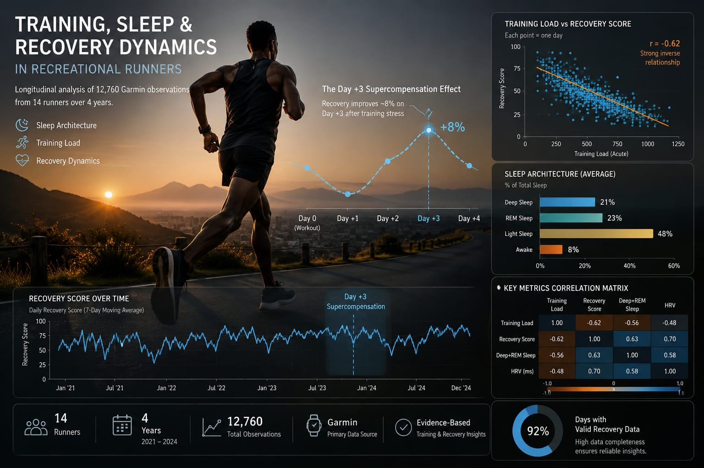
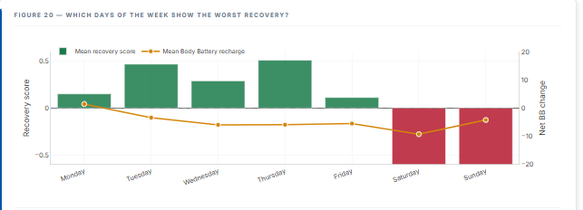
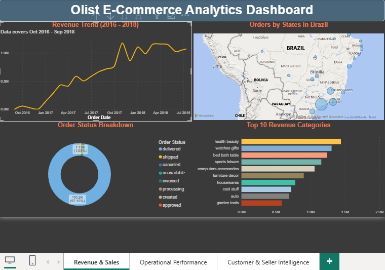
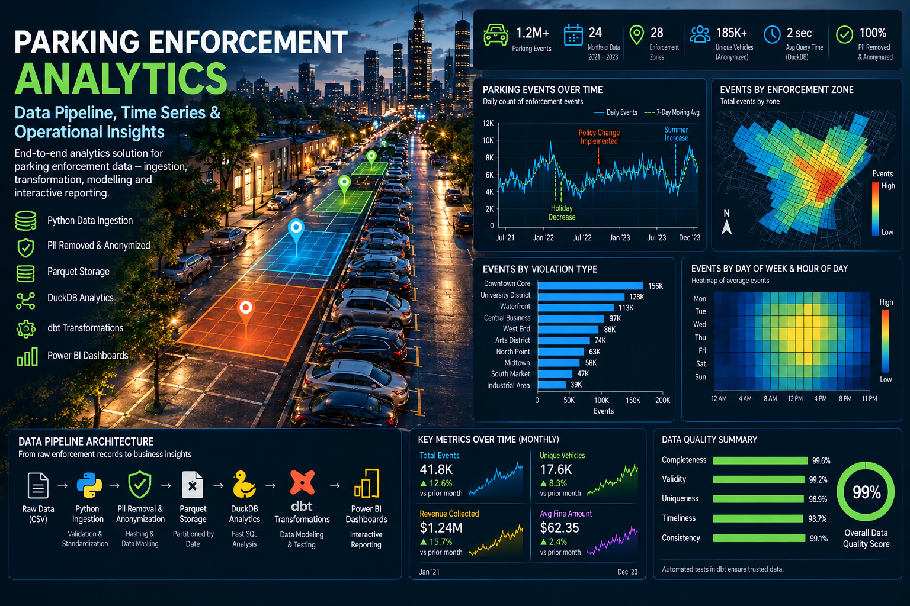

Agu Charles
Chibuike
I build reliable analytical workflows from raw operational data to analytical models, dashboards, and decision-ready insights.
Turning complex data into clear decisions

I'm an analytics engineer with 5+ years of end-to-end experience designing data pipelines, warehousing solutions, and BI dashboards across IoT, EV infrastructure, technology, hospitality, and fitness sectors — spanning Dubai, Abu Dhabi, and Nairobi.
My MSc capstone at the University of Nairobi investigates how training behaviour, sleep architecture, and recovery physiology interact across a cohort of 14 runners over four years — combining Garmin wearable data with mixed-effects modelling in R.
Before analytics, I taught Chemistry and Physics — a background that still shapes how I work with data: define the measurement carefully, understand the underlying process, validate the result, and only then draw conclusions.
Where I've built this
Analytics Engineer
- Developed and maintained ETL pipelines ingesting real-time telemetry from EV charging stations into a centralised Snowflake data warehouse, enabling sub-hourly operational reporting.
- Built Power BI dashboards monitoring uptime, session throughput, energy consumption, and fault frequency — the primary SLA reporting interface for commercial and operations teams.
- Implemented a multi-layer data validation framework on IoT sensor streams, improving data reliability for downstream analytics.
- Automated grid utilisation and performance reporting workflows, saving an estimated 15+ hours per reporting cycle.
Data Analytics Consultant
- Designed and deployed customer analytics dashboards tracking acquisition, retention, churn risk, and lifetime value (LTV) — directly informing pricing and promotional strategy.
- Built automated reporting pipelines integrating POS, booking, and revenue data sources into unified dashboards, replacing fragmented manual reporting.
- Conducted cohort and segmentation analysis across 1,000+ members to identify high-value customer groups and early-stage churn signals.
- Tracked MRR, revenue per member, and utilisation rates, supporting measurable improvements in scheduling efficiency and member engagement.
Technical Systems Analyst
- Supported ETL workflows transforming raw ANPR sensor logs into structured analytical datasets, underpinning system performance reporting across multiple client deployments.
- Improved data accuracy from ~78% to 94%+ — a 16-point gain sustained in production — by designing and implementing validation and data quality pipelines.
- Automated report generation using SQL and Python, reducing reporting cycle time by 60%+.
- Built Power BI dashboards tracking throughput, uptime, and recognition rates, and standardised data schemas across deployments to improve cross-site consistency.
- Led BI tool adoption across engineering and commercial teams, delivering training that accelerated time-to-insight for non-technical stakeholders.
Commercial Analytics Lead
- Designed Excel dashboards tracking revenue, customer traffic, product mix, and labour efficiency — converting raw POS data into weekly operational reporting for management.
- Developed inventory forecasting models that reduced waste and improved cost efficiency using historical sales trends and seasonal demand patterns.
- Delivered margin analysis, peak-hour optimisation insights, and staffing recommendations that informed scheduling decisions.
Chemistry & Physics Teacher
- Taught Chemistry and Physics, building the habit of defining measurements carefully and validating results before drawing conclusions — a discipline that carried directly into my analytics work.
Academic background
MSc Data Science (In Progress)
BSc Chemistry (Honours)
Selected work

Mixed-effects modelling identified sleep architecture (Deep+REM%) as the strongest predictor of next-morning recovery.

47 figures, one dashboard — explore training, sleep, and recovery patterns athlete by athlete, in real time.
Open dashboard
Analysis surfaced R$15.42M in total revenue with 92% on-time delivery, and a 97% one-time-purchase retention gap.
View project
Found a fleet-wide map-coverage gap affecting 5–11% of enforcement scans, plus workload concentration in the review pipeline.
View projectGradient Boosting improved scaffold-aware validation performance, with molecular lipophilicity and size emerging as the strongest predictors of aqueous solubility.
View project